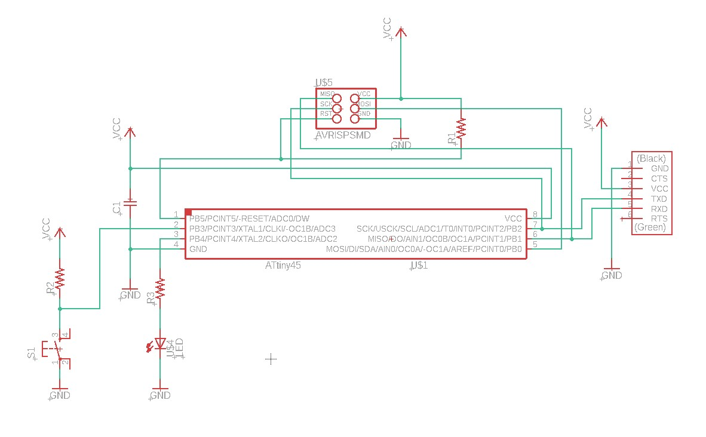
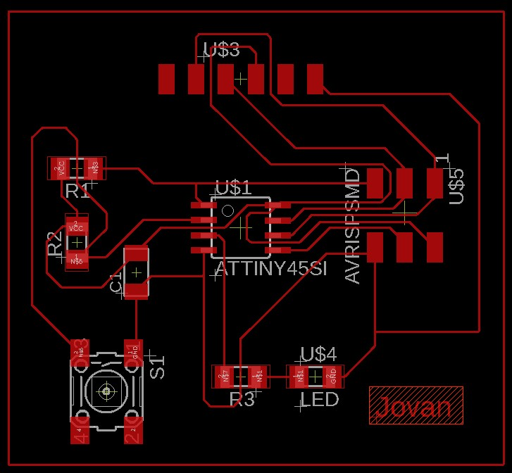
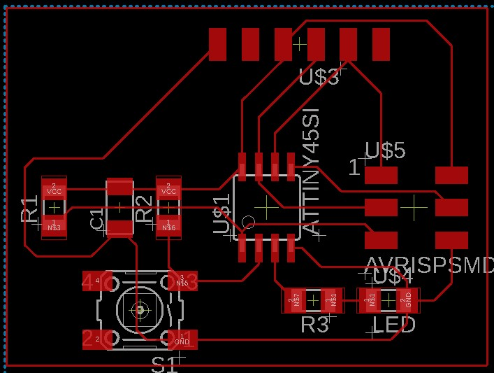
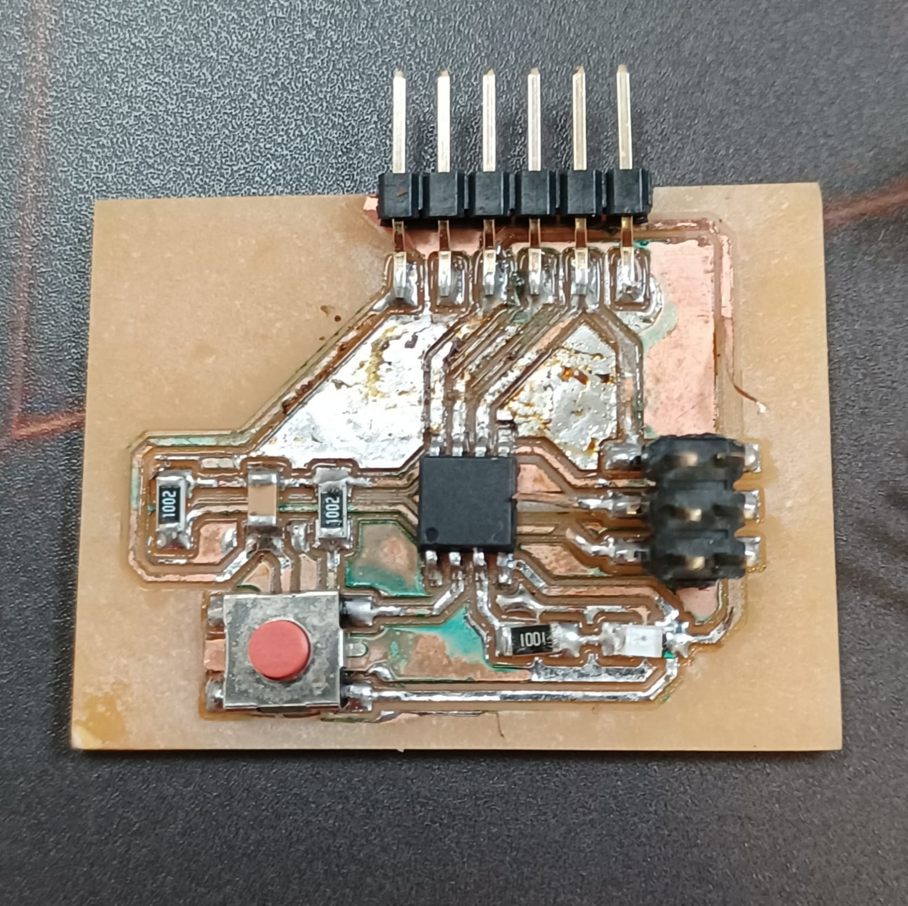

Electronics Design
This is the assignment for the ATtiny45 board. In order to meet the requirements, i added an LED with current limiting resistor and a SPST momentary switch with pull up resistor (to prevent floating input).

This is my first attempt at arranging and routing the PCB though i don't think i gave enough clearance between pads and pins for milling.

After realising that the clearances were not big enough for the fablab milling CNC, i rerouted the board with reference to another completed board. This is the result.

As you can see, the second design features less squeezing of wires between the legs of the SMD IC.
After milling and soldering, i ended up with this board. As i forgot to clean off the flux i used, some of the copper corroded (green spots). 